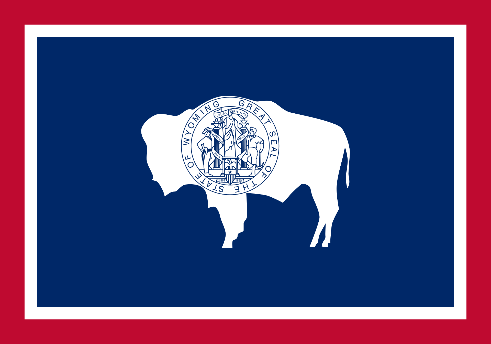
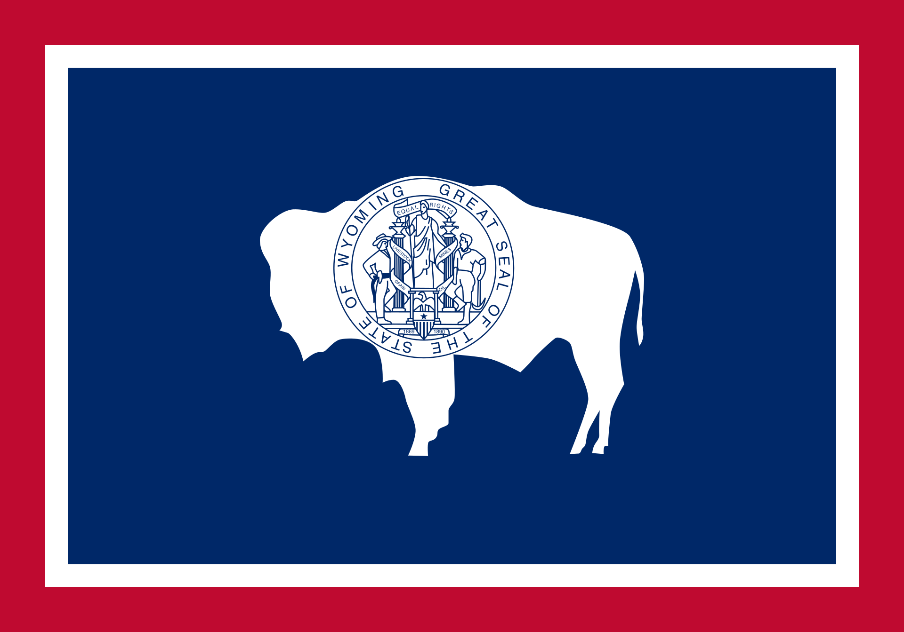

The Declaration of Independence is a revolutionary document. Its most memorable phrases include “all men are created equal” and “they are endowed by their Creator with certain unalienable Rights; that among these are Life, Liberty and the Pursuit of Happiness.” No less revolutionary was the phrase that followed: “Governments derive their just powers from the consent of the governed.” This bottom-up political philosophy ran counter to the top-down philosophy that has reigned through most of human history.
From our founding, however, women had been excluded from participating in our political process – local, state, and federal governments exercised their “just powers” without their consent. I Could Do That! Esther Morris Gets Women the Vote tells the story of a courageous woman who helped secure the first statewide victory for women’s suffrage. The fifty-year struggle culminated in the passage of the 19th Amendment to the Constitution in 1920, guaranteeing women the right to vote and be full partners in America’s political process.
Also important are the other themes the author, Linda Arms White, weaves into her story. Esther Morris, with her “I Could Do That!” attitude, epitomizes the work ethic and self-reliance that are important elements of American exceptionalism. Esther Morris is also an undaunted, serial entrepreneur, who repeatedly opened her own millinery businesses as she migrated west.

Title: I Could Do That! Esther Morris Gets Women the Vote
Author: Linda Arms White
Illustrator: Nancy Carpenter
Year Published: 2005
Length: 40 pages
Below is one suggestion for your week with the book I Could Do That!. Please experiment with what works for your family! (Note: not all activities are included in the suggested sample week below).
toc: "American Heritage Songbook: _Sufferin’ Till Suffrage_"
time: 3 minutes
freq: daily
Schoolhouse Rock has an engaging and age-appropriate song and video celebrating women’s suffrage and the passage of the 19th Amendment.
Now you have heard of Women’s Rights, And how we’ve tried to reach new heights. If we’re “all created equal”… That’s us too! Oh, we were sufferin’ until suffrage, Not a woman here could vote, no matter what age, Then the 19th Amendment struck down that restrictive rule. And now we pull down on the lever, Cast our ballots and we endeavor To improve our country, state, county, town, and school.
You can find it on YouTube or Disney+.
time: 30-60 minutes
prep: 10-15 minutes
supplies: cardstock, hole punch, scissors, stapler, markers, string or ribbon
When the ladies wanted hats to match the dresses, Esther designed and made those, too. Soon, she thought about opening a millinery shop.
There are a lot of different options for making your own hat. I tried to keep things in a similar style to Esther’s hats. Here is a link for paper plate Easter bonnets and here is one for tea party hats. However, we decided on two different approaches:
time: 10 minutes
supplies: U.S. puzzle
When Esther was forty-six, she went with John to the presidential election polls and watched through the window while he voted. “You know,” she told him when he came out, “I could do that.”
Wyoming led the way in giving women the right to vote in 1869; the Wyoming men who voted for women’s suffrage were more than half a century ahead of the 19th Amendment. In 1870, Wyoming became the first state with a female public official, when Esther Morris was appointed justice of the peace. In 1893, Wyoming celebrated its role as a leader in women’s suffrage by incorporating the motto “Equal Rights” into their official state seal and their state flag. In 1924 Wyoming was the first state to elect a female governor (Nellie Tayloe Ross). In 1960, Wyoming placed a statue of Esther Morris in the National Statuary Hall Collection in the U.S. Capitol (each state gets to place just two statues.) Wyoming’s nickname is “The Equality State.”
In 1820, Esther was only six years old. How many stars are on the flag on the second page? [23] Ask your child(ren) to start the puzzle of the United States by placing those 23 states in their place. By 1869, when Esther was 55 years old and Wyoming’s legislature gave women the right to vote, another 14 states had joined the United States. Ask your child(ren) to show how the United States was spreading across the West by adding those states to the puzzle. Wyoming became the 44th state in 1890. Ask them to place the next six states in the puzzle before finishing by placing Wyoming as the 44th.

 

time: 5 minutes
freq: daily
The 19th Amendment to the Constitution is short and to the point, making it ideal for memorization for older children.
The right of citizens of the United States to vote shall not be denied or abridged by the United States or by any state on account of sex.
Ask your kids: Do you know what state you were born in? Did women have the right to vote in that state before the 19th Amendment to the Constitution was ratified in 1920? The answer to this question is a little nuanced.
Only 15 states, almost all in the West, had granted women full voting rights: Wyoming (1869), Utah (1870), Washington (1883), Montana (1887), Colorado (1893), Idaho (1896), California (1911), Arizona (1912), Kansas (1912), Oregon (1912), Nevada (1914), New York (1917), Michigan (1918), Oklahoma (1918), and South Dakota (1918). The graphic below shows how women’s suffrage started in the West before spreading to the East.
Another twelve states had granted women more limited suffrage; they were granted the right to vote in presidential elections. Several of them jumped on the bandwagon in 1919 during the ratification fight: Illinois (1913), Nebraska (1917), Ohio (1917), Indiana (1917), North Dakota (1917), Rhode Island (1917), Iowa (1919), Maine (1919), Minnesota (1919), Missouri (1919), Tennessee (1919), Wisconsin (1919).
time: 20 minutes
prep: 10-15 minutes
I modified the following recipe:
I had trouble…
toc: "Re-enactment: Voting"
time: 10-20 minutes
Esther smiled. She turned to the candidates. “Then, would you, if elected, introduce a bill in the legislature that would allow women to vote?”
There are many ways to illustrate voting. A very simple one that we used with our kids mimicked women’s suffrage. We decided to vote on which restaurant to order our dinner from. We made ballots with the three pre-selected alternatives (two restaurants and a home-cooked spaghetti dinner). Before distributing the ballots we asked the older kids:
After the votes were tallied, we had two more votes to illustrate the “tyranny of the majority” and why some decisions were inappropriate for voting.
toc: "Re-enactment: Make Your Own First-Aid Kit"
time: 30-45 minutes
prep: 15-20 minutes
supplies: regular or childsized china tea set, loose tea leaves, strainer, tea kettle, sugar, cream or milk
Esther invited the two men running for the territorial legislature to her house to speak to the citizens. Then she sent out invitations to the most influential people in the territory: “Come for tea, and talk to the candidates.”
The formal tea party is featured multiple times in this story. This is a great opportunity to include extended family members, family friends, or other homeschooling families. You can invite them for a casual tea party or a more formal affair by asking them to dress up. At the very least, the kids can wear the hats they made if they did the “Make Your Own Hat” activity.
To imitate Esther’s tea parties, try making the tea using tea leaves and pour using a strainer.
Set the table for tea: tea cups and saucers, (fancy) table cloth, spoons, sugar, cream, snacks. Boil water. Have the children put tea leaves into a serving pot and then watch as you pour the boiling water over them. Let steep for a few minutes. Have the children set the strainer over a tea cup and pour the tea through the strainer (which should collect the tea leaves). Add sugar and cream to taste.
Enjoy tea and snacks in your stylish hats. Have the kids re-pour tea as needed.

time: 10 minutes
"You can help me get ready for the suffrage tea,” Mama said. “Aunt Mary will be arriving soon with our guest of honor, Miss Susan B. Anthony.” At the tea, everybody swarmed around Miss Anthony. They called her Aunt Susan, even though they weren’t related to her.
Title: Marching With Aunt Susan
Author: Claire Rudolph Murphy
Illustrator: Stacey Schuett
Year Published: 2011
Length: 36 pages
This true story takes place in 1896, more than a quarter century after women got voting rights in Wyoming Territory. Ten-year-old Bessie Pond and her mother meet Susan B. Anthony (“Aunt Susan”), a leader in the Women’s Suffrage movement for over 40 years at the time of the story. Aunt Susan has come to Berkeley, California to advocate, organize, and march in favor of a California referendum that will grant full voting rights to women. Young Bessie and her mother join the movement, marching with Aunt Susan. By now several western states have granted full voting rights to women: Wyoming, Utah, Colorado, Idaho, and Washington. Sadly, the 1896 referendum in California is defeated (it takes until a 1912 referendum passes for California women to gain their right to vote). But the story ends on a positive note as the campaign changes the dynamics in the Pond family.
Make sure your children notice how the banner that Bessie and her friend Rita are carrying changes from one page to the next.
time: 10 minutes
She is clothed with strength and dignity; she can laugh at the days to come. She speaks with wisdom, and faithful instruction is on her tongue.
The final section of Proverbs describes the “wife of noble character.” Much of the description could apply to both men and women. Certainly everyone should aspire to speak (and vote) with wisdom. As homeschooling parents, as mothers and fathers, this scripture is particularly apt as we strive to provide “faithful instruction” to our children.
Ask your children to memorize and recite this scripture. With your older children, ask them what it means to be “clothed with strength and dignity.”
time: 10 minutes
They worked in the mines by day, drank in the saloons by night.
The author uses words about different kinds of stores and places with which the young reader might not be familiar: millinery, saloon, polling place. In addition, there are words associated with politics that may be unfamiliar: abolitionist, proclamation, legislature, polling place, and suffrage. It’s always good to see how much your child(ren) can pick up from the context of the story before asking them if they know what the words mean.
time: 10 minutes
On September 6, 1870, one year after her tea party, Judge Esther Morris put on her best dress and walked with her husband, John, and her sons down the dusty street to the polling place. She would be one of a thousand Wyoming women voting that day, the first ever given that right permanently by any governing body in the United States.
Trace back your family history and share with your children which of your great-grandmothers was the first to vote. What state did they live in and when did it grant women the right to vote? Were they involved in the Women’s Suffrage movement?
Help your children draw a family tree that connects them to their first female ancestor who voted in a presidential election. If you aren’t sure, assume she voted in the first presidential election after her state granted women voting rights. Bonus question: who won the presidency the year she voted?
toc: "Art: Tea Party Motif"
time: 10 minutes
Esther strained the tea into cups, one for her mother, one for herself.
An artistic motif is an element or theme that is repeated throughout a story, art, or music. In I Could Do That! the author, Linda Arms White, begins the story with Esther learning to make and serve tea. Much later in the story Esther hosts a dramatic tea party where she first proposes that women in Wyoming should be able to vote.
The illustrator, Nancy Carpenter, brings her own artistic flair to this motif. Ask your kids to describe the pattern painted on the teapot and teacups in the early pages. Notice how it is reinforced in the first four pages, culminating in the two-page illustration on the death of Esther’s mother? Then ask them if there is any place else in the story where the flowered teapot and teacups are used? Show them how the author and illustrator work together, combining their words and pictures, to create a powerful motif that comes together at a crucial point of the story.
time: 10 minutes
As they walked, John, who still didn’t think women should vote, tried to coach her on which candidates and issues to vote for.
In both I Can Do That! and Marching With Aunt Susan the issue of women’s suffrage divides families. Esther Morris’s husband John did not think women should vote. The father of Bessie Pond’s friend, Rita, also did not support voting rights for women. Family relationships are more important than political issues but people sometimes forget that. Discuss with your children how to “agree to disagree” and respect each other’s rights to their own opinion. Point out how Esther Morris politely but firmly stood her ground.
time: 10 minutes
Esther opened another hat shop.
Esther was a serial entrepreneur. She opened up her first hat shop, to the shock of her fellow citizens, in Oswego, New York. She opened her second one after she moved to Illinois, and she opened her final millinery in South Pass City, Wyoming.
To help re-engage your kids in the story after a reading or two, ask them to count how many hats are on each page. At the end, ask them which page had the most hats? Which page had the most interesting hats? Which hat is their favorite? Why did one woman faint and another cover the eyes of her daughter when Esther opened her first shop?